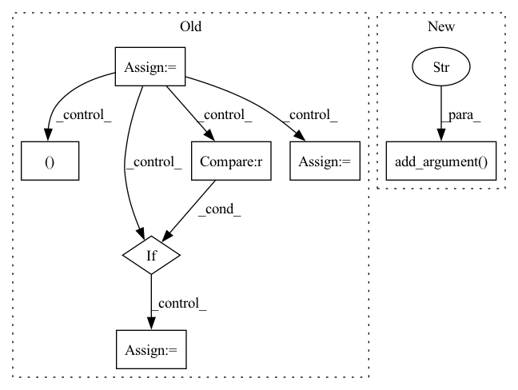

Pattern ID :17590
Before Change
if args.remove_with_heuristics:
all_input_columns = " ".join([o[c] for c in args.input_columns])
input_special_tokens = set(re.findall("[A-Za-z:_.]+_[0-9]", all_input_columns))
output_special_tokens = set(re.findall("[A-Za-z:_.]+_[0-9]", o[args.thingtalk_column]))
if not is_subset(output_special_tokens, input_special_tokens) :
heuristic_count += 1
continue
_, quote_values = remove_thingtalk_quotes(o[args.thingtalk_column])
if quote_values is None:
heuristic_count += 1
continue
should_skip = False
for q in quote_values:
if q not in all_input_columns :
heuristic_count += 1
should_skip = True
break
if should_skip:
continueAfter Change
help="The path to the output file.")
parser.add_argument("--query_file", type=str,
help="The path to the file containing new queries.")
parser.add_argument("--thrown_away" , type=str, default=None,
help="The path to the output file that will contain inputs that were removed because of `--transformation`.")
parser.add_argument("--thingtalk_gold_file", type=str,
help="The path to the file containing the dataset with a correct thingtalk column.")
parser.add_argument("--num_new_queries", type=int, default=1,
help="Number of new queries per old query. Valid if "--transformation replace_queries" is used.")In pattern: SUPERPATTERN
Frequency: 3
Non-data size: 7
Instances Fragment ID: 58041397
Project Name: stanford-oval/genienlp
Commit Name: d2eacd4e5c5347cb45907aea9e0a81a54b9fd5bf
Time: 2020-05-26
Author: s.j.semnani@gmail.com
File Name: genienlp/paraphrase/scripts/transform_dataset.py
M Class Name: AnonimousClass
N Class Name: AnonimousClass
M Method Name: main(0)
N Method Name: main(0)
M Parent Class:
N Parent Class:
M File Name: genienlp/paraphrase/scripts/transform_dataset.py
N File Name: genienlp/paraphrase/scripts/transform_dataset.py
M Start Line: 55
M End Line: 162
N Start Line: 31
N End Line: 196
Before Change
bag_vector = bag_data[:, 3]
bag_ins_list.append([bag_label, bag_vector])
bag_ins_list = shuffle(bag_ins_list)
test_pos = 0
while(test_pos):
bags_list, test_list = cross_validation_set(bag_ins_list, fold=10, index=1)
pos_c = 0
for fold in test_list:
pos_c = pos_c + fold[0]
print(pos_c)
if pos_c >= 0 and pos_c!= len(test_list):
test_pos = 1
acs = []
num_feats = 166After Change
parser.add_argument("--datasets", default="musk1", type=str, help="Choose MIL datasets from: musk1, musk2, elephant, fox, tiger")
parser.add_argument("--lr", default=0.0002, type=float, help="Initial learning rate")
parser.add_argument("--num_epoch", default=40, type=int, help="Number of total training epochs")
parser.add_argument("--cv_fold" , default=5, type=int, help="Number of cross validation fold")
parser.add_argument("--weight_decay", default=5e-3, type=float, help="Weight decay")
args = parser.parse_args()
if args.datasets == "musk1": Fragment ID: 58041389
Project Name: binli123/dsmil-wsi
Commit Name: 9904a494d25725384a486cb0c262c73de91b327a
Time: 2020-11-19
Author: bli346@wisc.edu
File Name: train_mil.py
M Class Name: AnonimousClass
N Class Name: AnonimousClass
M Method Name: main(0)
N Method Name: main(0)
M Parent Class:
N Parent Class:
M File Name: train_mil.py
N File Name: train_mil.py
M Start Line: 144
M End Line: 177
N Start Line: 114
N End Line: 168
Before Change
bag_vector = bag_data[:, 3]
bag_ins_list.append([bag_label, bag_vector])
bag_ins_list = shuffle(bag_ins_list)
test_pos = 0
while(test_pos):
bags_list, test_list = cross_validation_set(bag_ins_list, fold=10, index=1)
pos_c = 0
for fold in test_list:
pos_c = pos_c + fold[0]
print(pos_c)
if pos_c >= 0 and pos_c!= len(test_list):
test_pos = 1
acs = []
num_feats = 166After Change
parser.add_argument("--datasets", default="musk1", type=str, help="Choose MIL datasets from: musk1, musk2, elephant, fox, tiger")
parser.add_argument("--lr", default=0.0002, type=float, help="Initial learning rate")
parser.add_argument("--num_epoch", default=40, type=int, help="Number of total training epochs")
parser.add_argument("--cv_fold" , default=5, type=int, help="Number of cross validation fold")
parser.add_argument("--weight_decay", default=5e-3, type=float, help="Weight decay")
args = parser.parse_args()
if args.datasets == "musk1": Fragment ID: 58041388
Project Name: binli123/dsmil-wsi
Commit Name: 9904a494d25725384a486cb0c262c73de91b327a
Time: 2020-11-19
Author: bli346@wisc.edu
File Name: .ipynb_checkpoints/train_mil-checkpoint.py
M Class Name: AnonimousClass
N Class Name: AnonimousClass
M Method Name: main(0)
N Method Name: main(0)
M Parent Class:
N Parent Class:
M File Name: .ipynb_checkpoints/train_mil-checkpoint.py
N File Name: .ipynb_checkpoints/train_mil-checkpoint.py
M Start Line: 144
M End Line: 177
N Start Line: 114
N End Line: 168